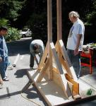

The trebuchet
Yes, Dale Yoakum and I really did build this crazy trebuchet. It's a pile of 4x4s for the platform and side supports. The counterweights are 100 lbs of exercise weights and the throwing arm is a hunk of 1.5" square perforated steel tubing. Building it was a lot of fun.The hard part was getting the trajectory right. To be efficient, they really want to hurl things with a very high arc. But the hall that the keynotes are in, Hall D, has a rather low ceiling. In past years they keynotes have been in halls A/B/C which join together into one gigantic hall with a very high ceiling and the exhibition has been in hall D. But the exhibition has grown so much that they wanted to put it in A/B/C so the keynotes got punted to D.
We had originally wanted to fire the trebuchet from the stage. But in practicing last night we kept whacking the speakers, lights and trusses. Getting a flat arc was difficult to make predictable because the adjustments were very sensitive in that range. So we moved it off to the side where we got an extra four feet by being on the floor instead of the stage, and there was less clutter in the ceiling. It was carefully aligned along a slot where there were no speakers or lights up near the ceiling.
Yes. The contest is on. Don't send me suggestions for how to hurl t-shirts, that's what the contest is about! Over the next month or two I'll be putting together some contest rules - I'll probably set up a Wiki Web to discuss ideas for how to structure the contest. Later...
| June 17, 2005 |